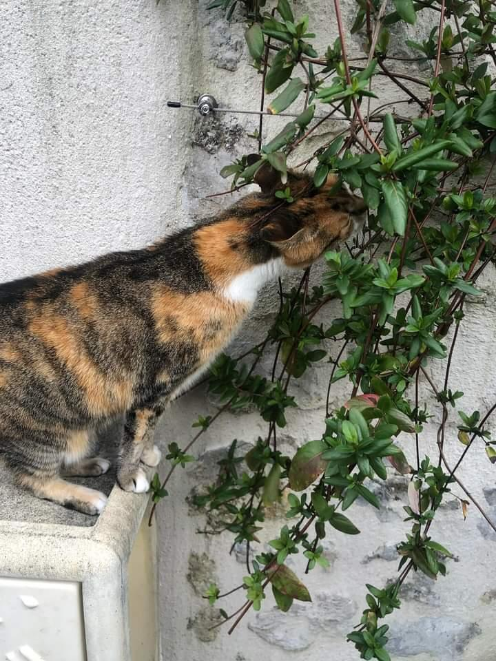
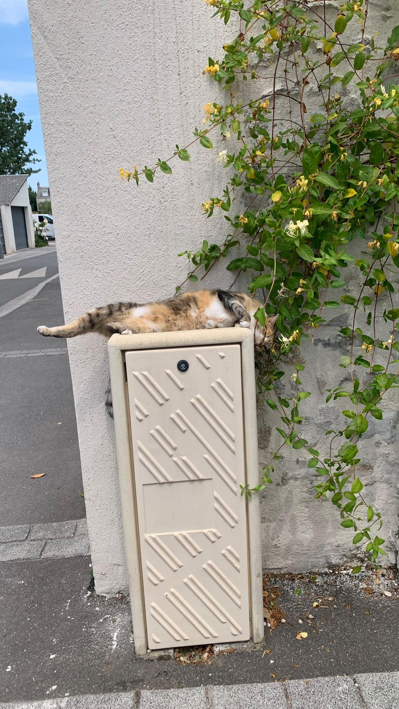

✩ LOS GATITOS ✩
✭ Bienvenue sur la page de Mimi du lycée ✭
Ses caractéristiques
Couleur des yeux: Vert
Couleur des poils: Noir/blanc/orange
Corpulance: Normal
Propriétaire: On ne l'a jamais vu (mais je l'associe psychologiquement à mon amie Liana)
Personnalité
Sa personalité ressemble à celle de pamuk au vu de sa sociabilité, étant dans une rue très fréquentée, beaucoup de monde la caresse.
Si elle est dans son jardin elle viendra à l'entente de "mimi" et réclamera des caresses./ᐠ｡ꞈ｡ᐟ✿\
Reconnait les bruits de pas d'Agathe qui la caresse le plus souvent et nous miaule dessus pour qu'on la caresse quand elle nous aperçoit.
Fun fact
Elle a déjà faillit se faire catnapper!
Photo Bonus
Mimi est obsédée par ces plantes, seraient-elles une sorte de drogue pour elle ?
Elle n'a vraiment peur de rien pour s'étaler comme ça au milieu de la rue...
